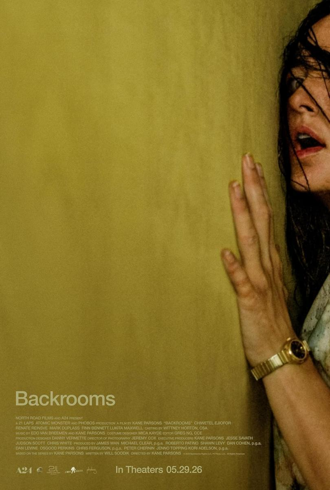
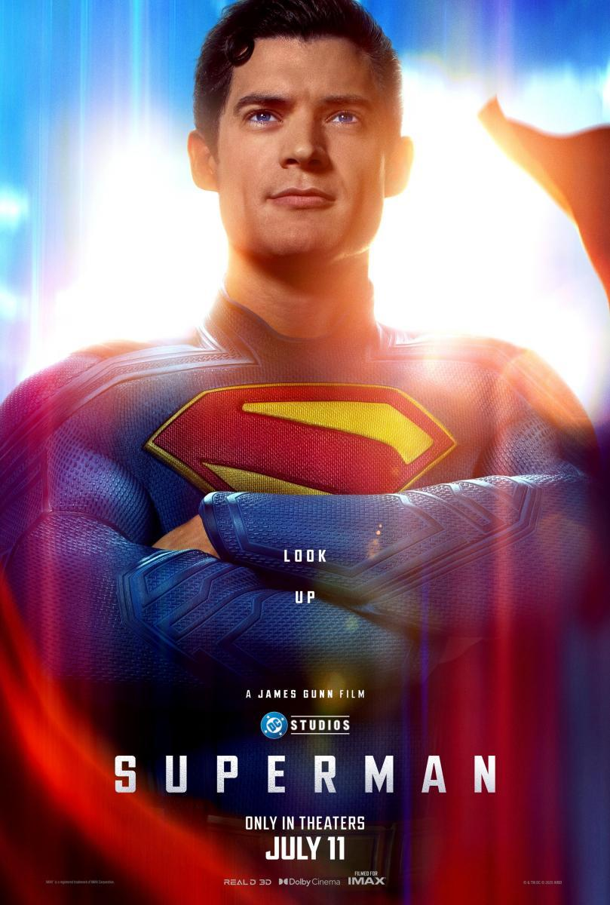
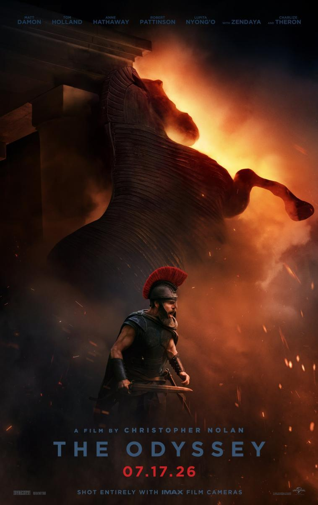

Hola a todos, esta es mi pagina web en la que voy a hablar
de algunas cosas sobre mi,
tales como mis
aficiones, musicas favoritas,
peliculas que me han gustado, libros y
viajes.
Citare tres cosas que me gustan:
Entre las canciones que me gustan hay mucha variedad, entre ellas: Entre otros...
No me considero un cinefilo pero si un recurrente del cine, mis peliculas favoritas son:



En cuanto a los libros es una de mis cosas que he dejado estancadas, suelo leer muchos comics y mangas pero tambien soy fan de literaturas filosoficas y mitologicas. A continuacion mi lista:
Hasta aquí mi web personal, muchas gracias por llegar hasta el final!